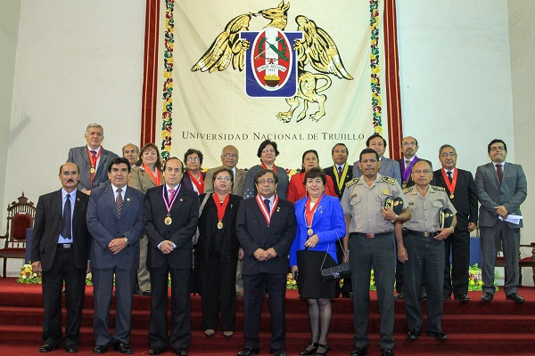

El alcalde (e) de la Municipalidad de Trujillo, Dante Chávez Abanto, destacó el rol cumplido por la Universidad Nacional de Trujillo a lo largo de sus 183º años de funcionamiento en la historia académica del país, resaltando el nivel y la labor que han desarrollado sus egresados.
Fue durante la ceremonia de aniversario de nuestra primera casa de estudios superiores, la que se realizó en el paraninfo de su sede central, con presencia de diversas autoridades, en la que transmitió el saludo de la alcaldesa Gloria Montenegro Figueroa, quien está participando en Argentina en un importante foro municipalista iberoamericano.
Chávez Abanto, quien acaba de ser elegido consejero al gobierno regional por la provincia de Trujillo, en representación del partido político Alianza Para el Progreso, es egresado de esta casa de estudios y su intervención fue muy aplaudida por los presentes.
Por su parte, el rector de la UNT, Orlando Velásquez Benites, condecoró con diploma y medalla de honor al mérito a dos estudiantes del 10 ciclo de la Escuela Académico Profesional de Mecatrónica, que obtuvieron el primer puesto en la II Copa Internacional de Mecatrónica realizada en México.